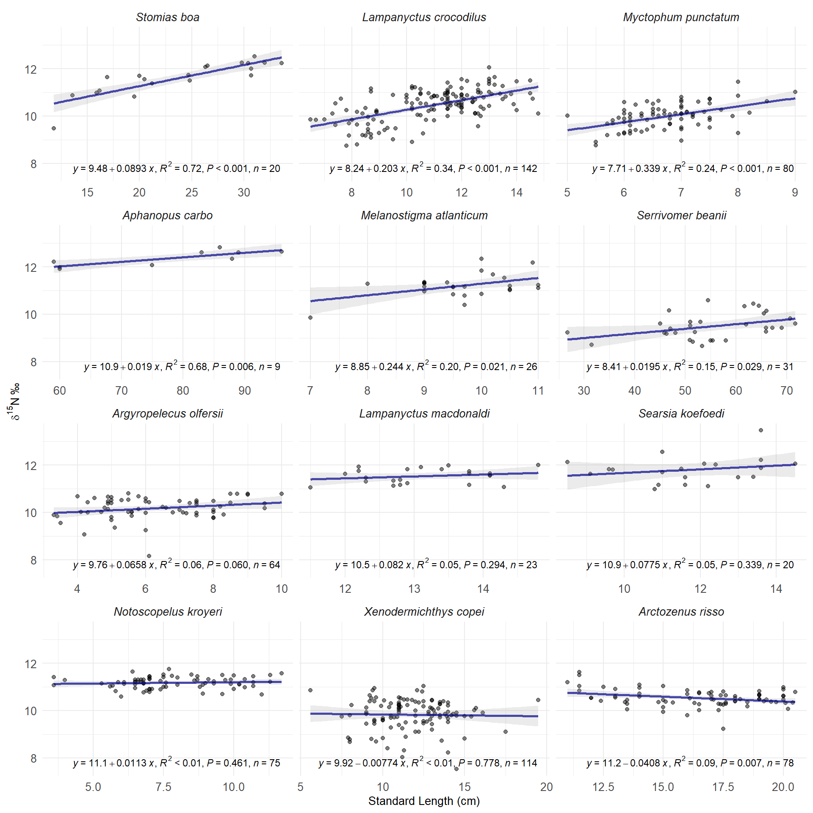
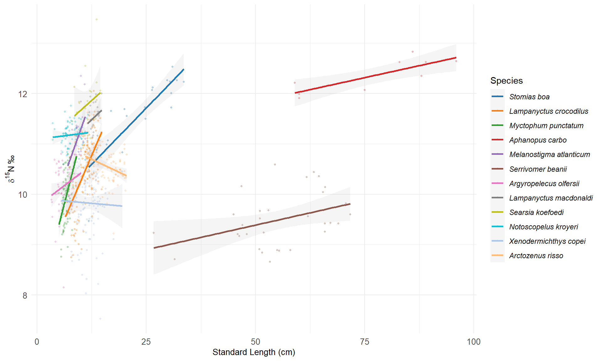
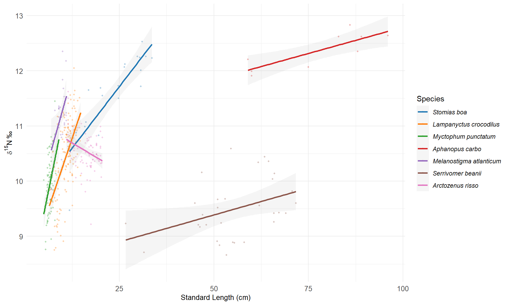

Ontogeny of deep pelagic fish
d15N - size relationship
- d15N standardized for all species

Summarise results
All relationship on 1 plot

Significant relationship on 1 plot
Arctozenus risso was the only species with a significantly negative relationship
